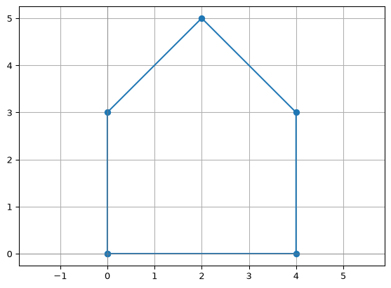
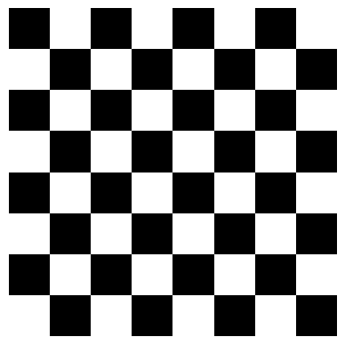
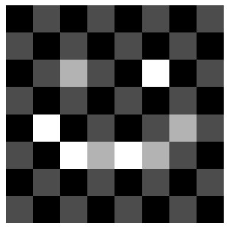
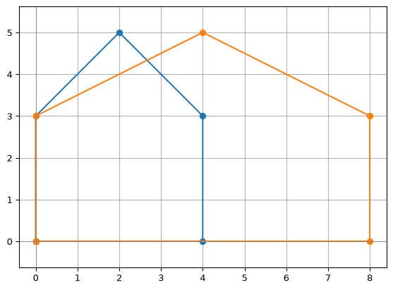
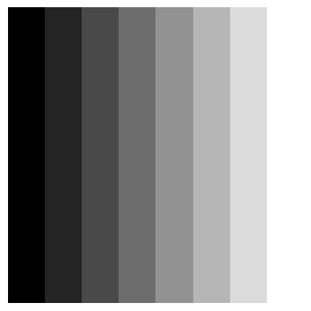
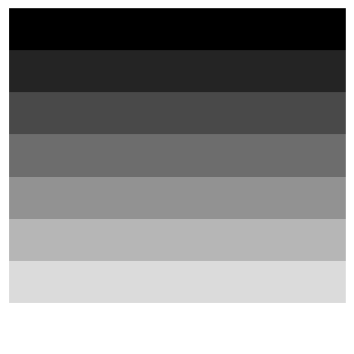

import numpy as np
import matplotlib.pyplot as pltArray Arithmetic and Broadcasting
Module 3: NumPy
Array Arithmetic and Broadcasting
In the last session, you stored the marks of the midterm in a NumPy array, but the most important number was still missing: the final grade of each student. We will start by computing it.
Then we will learn how NumPy does arithmetic with whole arrays at once, element by element, even when their shapes are different. This array-based style is the foundation of vector programming. Besides the grades, many of our examples come from linear algebra (vectors and shapes in the plane) and from images, which are arrays too.
First, we import the libraries we will use in this session. NumPy is the library for arrays, and Matplotlib is a plotting library that we will use to display images and shapes.
We will use two helper functions to see the results. show() is the one from the last session: it displays a 2D array as a grayscale image. draw() plots one or more polygons. You do not need to understand how they work: we will learn more about plotting later in the course.
def show(image):
"""Display a 2D array as a grayscale image (0 = black, 1 = white)."""
plt.imshow(image, cmap="gray", vmin=0, vmax=1)
plt.axis("off")
plt.show()
def draw(*shapes):
"""Draw one or more polygons given as arrays of points with shape (n, 2)."""
for shape in shapes:
closed = np.vstack([shape, shape[:1]]) # repeat the first point to close the polygon
plt.plot(closed[:, 0], closed[:, 1], marker="o")
plt.axhline(0, color="gray", linewidth=0.5)
plt.axvline(0, color="gray", linewidth=0.5)
plt.axis("equal")
plt.grid(True)
plt.show()Here is the data for today. First, the midterm from the last session:
students = ["Ana", "Bruno", "Chloe", "Diego", "Emma", "Farid"]
# Points of each exercise: 2 open problems, 3 debugging, 6 multiple choice
weights = np.array([20, 20, 10, 10, 10, 5, 5, 5, 5, 5, 5])
marks = np.array([
[0.75, 1, 0.5, 1, 0.5, 1, 1, 0, 1, 1, 1], # Ana
[0.5, 0.25, 1, 0.5, 0, 1, 0, 1, 1, 0, 1], # Bruno
[1, 1, 1, 1, 0.5, 1, 1, 1, 0, 1, 1], # Chloe
[0.25, 0.5, 0.5, 0.5, 0.5, 0, 1, 0, 1, 0, 1], # Diego
[1, 1, 0.5, 1, 1, 1, 0, 1, 1, 1, 1], # Emma
[0.5, 0.5, 0.5, 0, 1, 1, 1, 0, 0, 1, 0], # Farid
])A shape in the plane is a list of points. With NumPy, it is an array with one point per row: column 0 holds the \(x\) coordinates, and column 1 the \(y\) coordinates.
# The corners of a house, one point (x, y) per row
house = np.array([
[0, 0], # bottom-left
[4, 0], # bottom-right
[4, 3], # top-right
[2, 5], # roof
[0, 3], # top-left
])
corners = ["bottom-left", "bottom-right", "top-right", "roof", "top-left"]
print(house.shape)
draw(house)(5, 2)
And the two images we painted in the last session:
face = np.zeros((8, 8))
face[2, 2] = 1 # left eye
face[2, 5] = 1 # right eye
face[5, 2:6] = 1 # mouth
face[4, 1] = 1 # left corner of the smile
face[4, 6] = 1 # right corner of the smile
show(face)board = np.zeros((8, 8))
board[::2, 1::2] = 1 # even rows, odd columns
board[1::2, ::2] = 1 # odd rows, even columns
show(board)
The Problem: Grading with Loops
The points of a student in one exercise are her mark times the value of the exercise. Her final score is the sum over all exercises, and dividing by 10 gives a grade out of 10. With what we know from Modules 1 and 2, that means two nested loops:
final_grades = []
for row in marks:
total = 0
for j in range(len(weights)):
total = total + row[j] * weights[j]
final_grades.append(float(total / 10))
print(final_grades)[8.0, 5.0, 9.0, 4.5, 9.0, 5.0]It works, but the code hides the idea behind indices and accumulators. With NumPy, it is one line:
final_grades = np.sum(marks * weights, axis=1) / 10
print(final_grades)[8. 5. 9. 4.5 9. 5. ]These are the final grades we promised in the last session. In this session we will understand every piece of that line. In this part: the element-wise *, and why marks and weights can be multiplied although they have different shapes. In the next part: what axis=1 does.
Element-Wise Operations
When two arrays have the same shape, the arithmetic operators act element by element: the first element with the first element, the second with the second, and so on. Let’s take one student:
ana = marks[0]
# Multiplication element-wise: points earned in each exercise
print(ana * weights)[15. 20. 5. 10. 5. 5. 5. 0. 5. 5. 5.]This is also how you add vectors and multiply them by a scalar in linear algebra:
# Two vectors of R^3
u = np.array([1, 2, 3])
v = np.array([4, 0, -1])
# Vector addition and subtraction
print(u + v)
print(u - v)[5 2 2]
[-3 2 4]# A scalar is applied to every element
print(3 * u)
print(u / 2)[3 6 9]
[0.5 1. 1.5]# Power element-wise
print(u ** 2)[1 4 9]u * v is not a dot product
The product u * v also works element by element, and gives another vector:
print(u * v)[ 4 0 -3]This is not the dot product you know from linear algebra, which is a single number. We will meet the dot product later in this session.
Exercise: A Linear Combination
Compute the linear combination \(2u - v + 3w\) without a loop. Then compute the midpoint between \(u\) and \(v\), \(\frac{u + v}{2}\).
# Three vectors of R^3
u = np.array([1, 2, 3])
v = np.array([4, 0, -1])
w = np.array([0, 1, 1])
Solution
print(2 * u - v + 3 * w)
print((u + v) / 2)[-2 7 10]
[2.5 1. 1. ]
Exercise: Vectors Without Typing Them
Create the vector \((1, 2, 3, \dots, 10)\) without typing it. From it, and without a loop, build \((1, 4, 9, \dots, 100)\) and \((1, \frac{1}{2}, \frac{1}{3}, \dots, \frac{1}{10})\).
Solution
n = np.arange(1, 11)
print(n ** 2)
print(1 / n)[ 1 4 9 16 25 36 49 64 81 100]
[1. 0.5 0.33333333 0.25 0.2 0.16666667
0.14285714 0.125 0.11111111 0.1 ]Arithmetic on Images
An image is an array too, so arithmetic also works on pictures. Subtracting every pixel from 1 swaps black and white:
show(1 - face)Multiplying by a number smaller than 1 makes the image darker:
show(0.5 * face)
Adding two images with the same shape adds their pixels. Values above 1 are displayed as white.
show(face + board)
Exercise: Blending Two Images
An \(8 \times 8\) image is a vector with 64 numbers, so we can make linear combinations of images. Show the image \(0.7 \cdot \text{face} + 0.3 \cdot \text{board}\). Then try other weights that add up to 1. What happens when the weight of face goes from 1 to 0?
Solution
show(0.7 * face + 0.3 * board)
for a in [1, 0.75, 0.5, 0.25, 0]:
show(a * face + (1 - a) * board)The face slowly fades into the chessboard. Video editors use exactly this operation for a cross-fade between two scenes.
Broadcasting in NumPy
Look again at the final grades: marks has shape (6, 11), while weights has shape (11,). They do not have the same shape… and yet:
points = marks * weights
print(points)[[15. 20. 5. 10. 5. 5. 5. 0. 5. 5. 5.]
[10. 5. 10. 5. 0. 5. 0. 5. 5. 0. 5.]
[20. 20. 10. 10. 5. 5. 5. 5. 0. 5. 5.]
[ 5. 10. 5. 5. 5. 0. 5. 0. 5. 0. 5.]
[20. 20. 5. 10. 10. 5. 0. 5. 5. 5. 5.]
[10. 10. 5. 0. 10. 5. 5. 0. 0. 5. 0.]]NumPy multiplied every row of marks by weights. This mechanism is called broadcasting: it allows NumPy to work with arrays of different shapes when performing arithmetic operations. We have already used its simplest form, a scalar with an array: 3 * u.
How does broadcasting work?
- NumPy compares the shapes of the arrays element-wise, starting from the trailing (rightmost) dimensions.
- If the dimensions are equal, or one of them is 1, they are considered compatible.
- NumPy then “stretches” the smaller array along the dimension with size 1 (or the missing dimension) to match the larger array.
In our case:
marks (6, 11)
weights (11,) -> treated as (1, 11), then stretched to (6, 11)
result (6, 11)The same rule works with the house, with shape (5, 2). A scalar scales every point, and a row of shape (2,) is added to every point. This makes the house twice as big and moves it 3 units right and 1 unit up:
moved = 2 * house + np.array([3, 1])
print(moved)
draw(house, moved)[[ 3 1]
[11 1]
[11 7]
[ 7 11]
[ 3 7]]
With a row of shape (2,), we can also scale each coordinate differently. This stretches the house horizontally:
draw(house, house * np.array([2, 1]))
Now consider a different situation. We want to pull the roof away from the origin, multiplying that point by 1.5 and leaving the others as they are. We store one factor per point:
pull = np.array([1, 1, 1, 1.5, 1])
print(pull.shape)(5,)pulled = house * pullValueError: operands could not be broadcast together with shapes (5,2) (5,) The trailing dimensions are 2 and 5: they are different and neither is 1, so the shapes are incompatible. We need pull to be a column, with shape (5, 1), so that it is stretched along the coordinates. A reshape is enough:
pull_column = pull.reshape(5, 1)
print(pull_column)[[1. ]
[1. ]
[1. ]
[1.5]
[1. ]]pulled = house * pull_column
draw(house, pulled)
house (5, 2)
pull_column (5, 1) -> stretched to (5, 2)
result (5, 2)
Exercise: Which Shapes Broadcast?
Without running any code, decide which of these arrays can be added to house (shape (5, 2)). For those that work, what is the shape of the result?
- A scalar,
0.5 - An array with shape
(2,) - An array with shape
(5,) - An array with shape
(1, 2) - An array with shape
(5, 1) - An array with shape
(3, 2)
Solution
- Works,
(5, 2): a scalar is applied to every element. - Works,
(5, 2): one value per coordinate, repeated for every point. - Fails:
5and2are compared and are different. - Works,
(5, 2): the1is stretched to 5 rows. - Works,
(5, 2): the1is stretched to 2 columns. - Fails:
3and5are different and neither is1.
Exercise: Painting with Broadcasting
Build these \(8 \times 8\) images with no loops and no slicing, starting only from ramp = np.linspace(0, 1, 8):
- A gradient from black (left) to white (right). Hint: add
rampto a black canvas. - A gradient from black (top) to white (bottom).
- A diagonal gradient: black in the top-left corner, white in the bottom-right corner.
- Light the face from the right, using the gradient of step 1.
What are the shapes involved in each one?
Solution
ramp = np.linspace(0, 1, 8)
canvas = np.zeros((8, 8))
horizontal = canvas + ramp # (8, 8) + (8,)
show(horizontal)
vertical = canvas + ramp.reshape(8, 1) # (8, 8) + (8, 1)
show(vertical)
diagonal = (ramp + ramp.reshape(8, 1)) / 2 # (8,) + (8, 1) -> (8, 8)
show(diagonal)show(face * horizontal)
In step 3, both arrays are stretched: the row (8,) is repeated down, and the column (8, 1) is repeated across. The result has shape (8, 8), even though neither input does.
Practice
Deactivate AI assistant tools, and try the following exercises.
Exercise: Scale and Broadcast
Compute the following operation, where the products are element-wise:
\[5 \cdot A \cdot v\]
Where \[A=\begin{pmatrix} 1 & 2 & 3 & 4\\ 5 & 6 & 7 & 8\\ 9 & 10 & 11 & 12 \end{pmatrix}\] and \(v = [-2, -1, 0, 1]\)
Solution
A = np.array([
[1, 2, 3, 4],
[5, 6, 7, 8],
[9, 10, 11, 12]
])
v4 = np.array([-2, -1, 0, 1])
result = 5 * A * v4
print(result)[[-10 -10 0 20]
[-50 -30 0 40]
[-90 -50 0 60]]
Exercise: Column Weights
Given any matrix \(A\), multiply the elements of its first column times 1, the second column times 2, the third times 3, and so on.
For instance:
\[A = \begin{pmatrix} 1 & 2 & 3\\ 4 & 5 & 6\\ \end{pmatrix}\]
Would end up being: \[A' = \begin{pmatrix} 1 & 4 & 9\\ 4 & 10 & 18\\ \end{pmatrix}\]
Your code should work for a matrix with any number of columns.
Solution
A = np.array([
[1, 2, 3],
[4, 5, 6]
])
column_weights = np.arange(1, A.shape[1] + 1)
result = A * column_weights
print(result)[[ 1 4 9]
[ 4 10 18]]This is exactly what we did with house * np.array([2, 1]).
Summary and Reflection
- Arithmetic operators act element by element on compatible arrays: this is vector addition and multiplication by a scalar. An operation with a scalar applies to every element.
- Broadcasting compares shapes from right to left and allows dimensions that match or equal
1. - A row of shape
(n,)is repeated down every row; a column of shape(m, 1)is repeated across every column.
Given arrays with shapes (4, 3) and (3,), explain why addition works. Would addition still work if the second shape were (4,)?
We have multiplied the marks by the weights, but we still have to add the points of each student. That is the job of the aggregation functions, in the second part of this session.
Homework and Review
Work through the homework exercises available here.